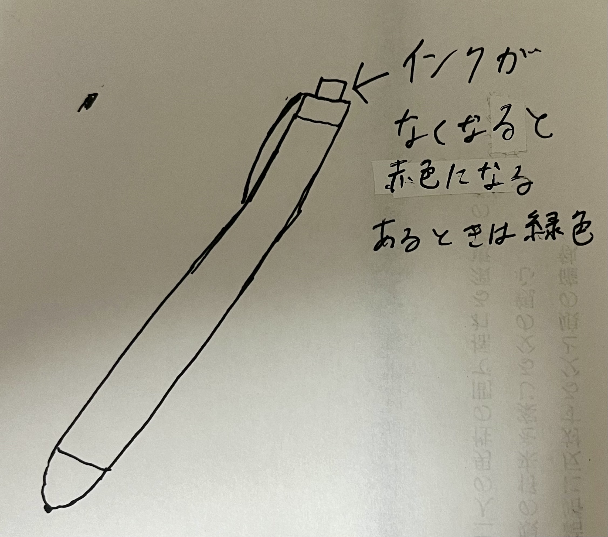

<!DOCTYPE html>
<html lang="jp">
    <head><body style="background-color: rgb(137, 217, 239);"><p style="color: rgb(50, 127, 158);"></p></body>
        <meta charset="UTF-8">
<html lang="jp">
<head>
    <meta charset="UTF-8">
    <title>XBP_HPsample</title>
    <link rel="stylesheet" href="./css/style.css">
    <link rel="shortcut icon" href="./images/xbp.ico">
</head>
<body>
    <logotohome>
    <a href="../index.html"></a>
    </logotohome>
    <h1>発見した課題</h1><br>
    私が夏休みに発見した課題を紹介します！
    私が夏休みに発見した課題はペンのインクがあるかないのかわからないという課題です。<br>
    大学生になるとペンを使う機会が増えてよく使うが、インクがいつ切れるかわからないことがある。<br>
    透明なケースに入っているものはわかるが、それでもインクがないということがわかりやすい方が良いと思う。<br>
    私が考えるペンはインクがなくなるにつれてペンの押すところの色が変わる仕組みにするということです。<br>
    <h2>スケッチ</h2><br>
    <br>
    インクがある時は、押すところが緑色でありインクがなくなるにつれて黄色➡赤色と色が変わってく。<br>
    信号機の配色にした理由は、みんなが毎日のように見ているからこの配色だとわかりやすいと考えたからです。<br>